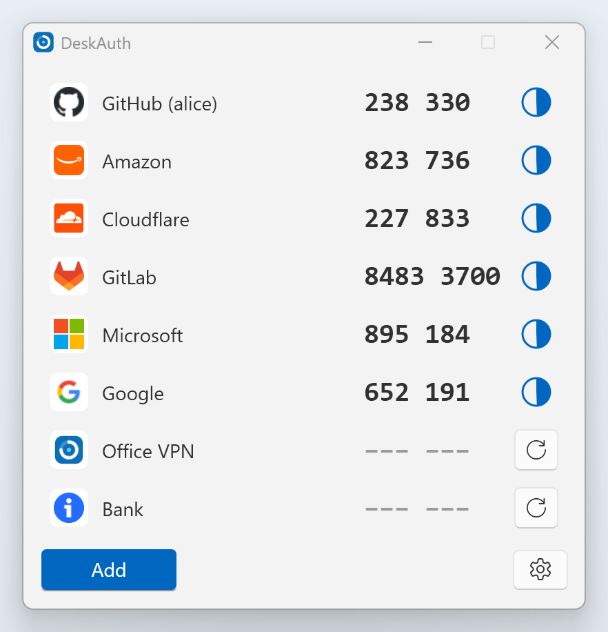
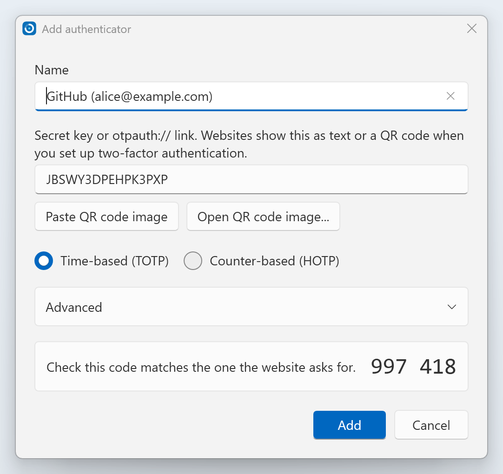
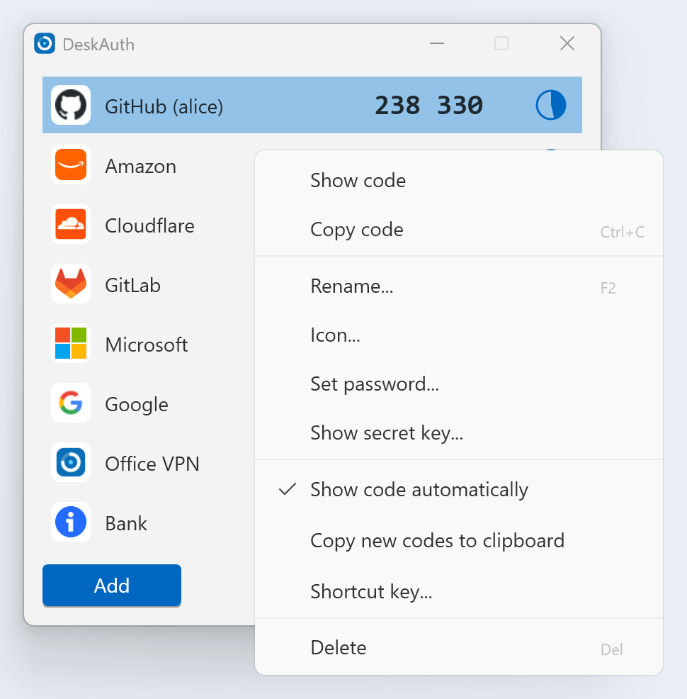
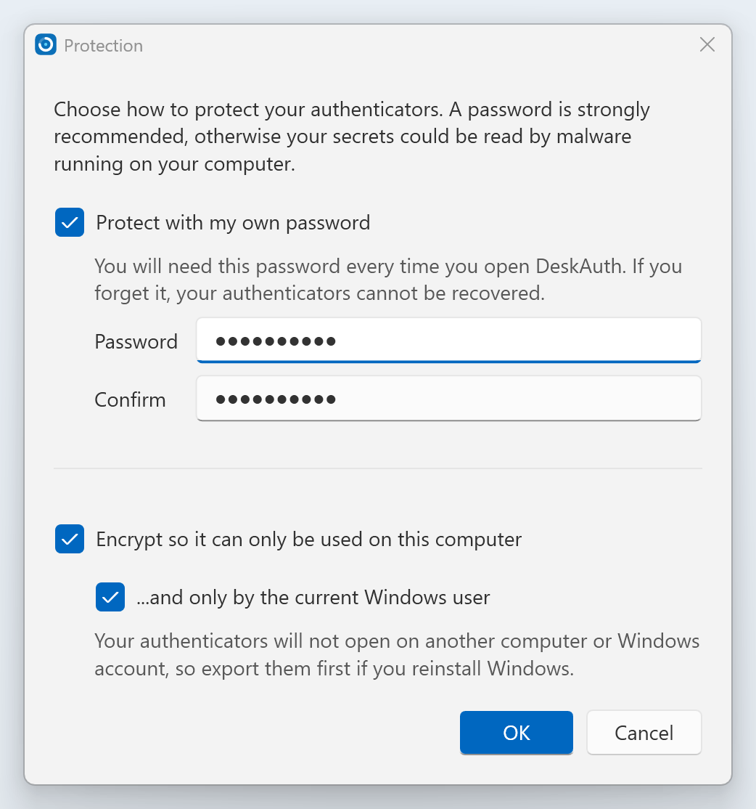
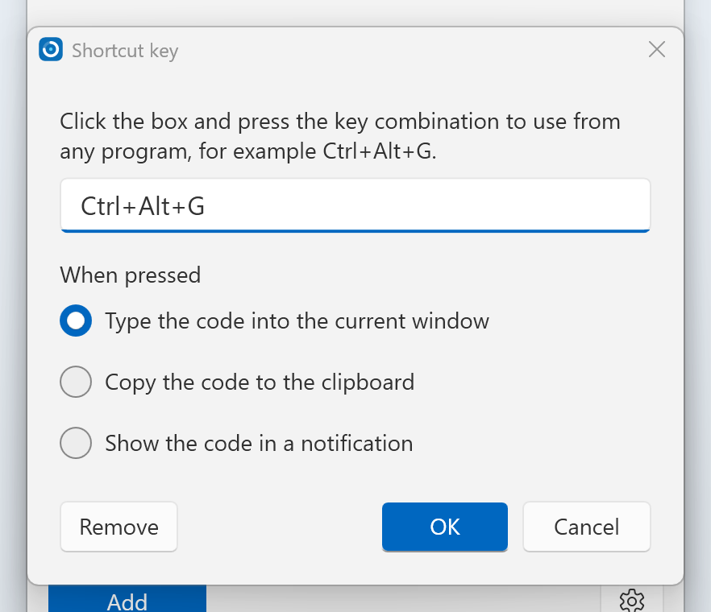
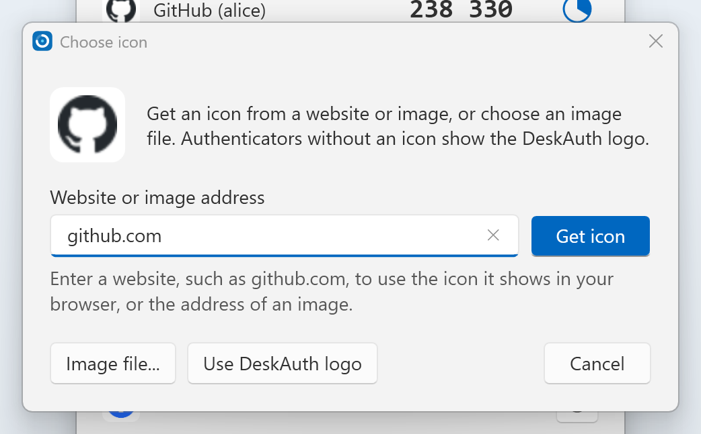
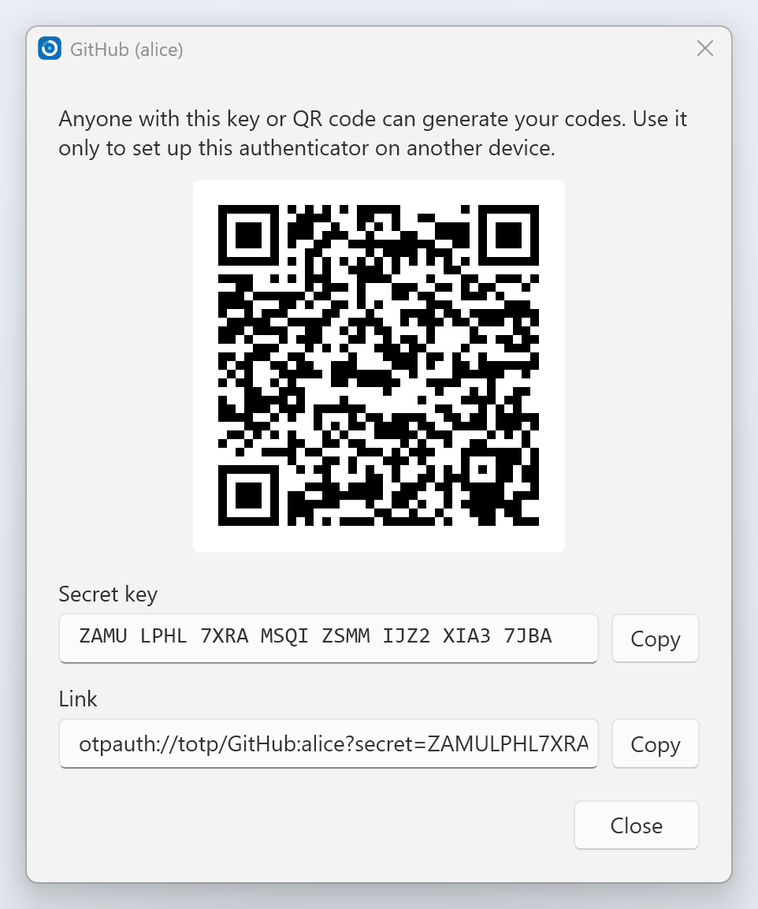
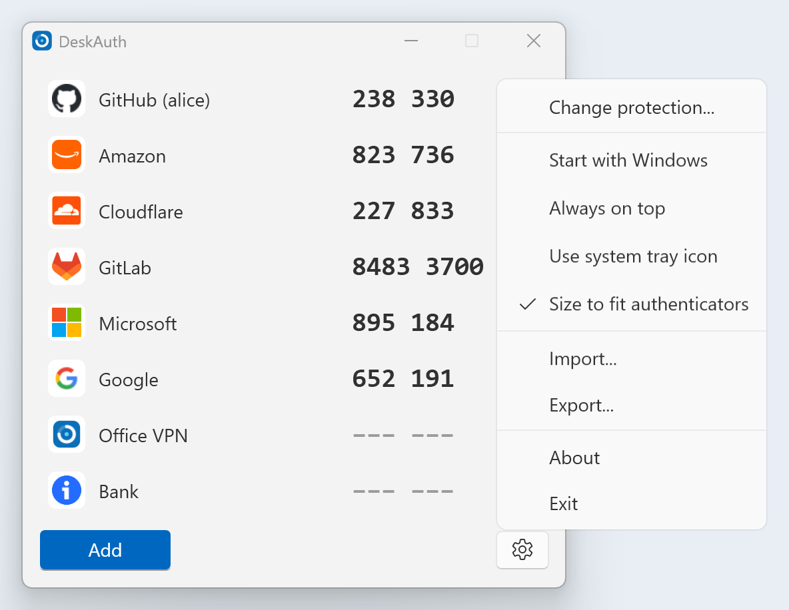

Your two-factor codes, on your Windows desktop
DeskAuth is a free, open-source authenticator for Windows. It generates the six or eight digit codes used to sign in to GitHub, Microsoft, Google, Amazon and any website that supports authenticator apps.
Version 4.3.0, for Windows 10 and 11. Portable, no installation, no account, and your secrets never leave your computer.

Everything you need, nothing you don't
DeskAuth uses the standard time-based (TOTP, RFC 6238) and counter-based (HOTP, RFC 4226) algorithms, so it works with any service that offers an authenticator app.
Add in seconds
Paste the secret key or otpauth:// link, or use a screenshot of the QR code from the clipboard or a file.
Strong encryption
Protect your authenticators with a password (PBKDF2-SHA256 and AES-256-GCM), and lock them to this computer or Windows account.
Codes at your fingertips
Double-click to copy, or use a shortcut key to type the code into any program. Quick access from the system tray.
Recognisable icons
Use the icon a website shows in your browser, any image, or the DeskAuth logo.
Move freely
Import and export the otpauth:// format used by other authenticator apps, or show a QR code to set up your phone.
Modern and sharp
Light and dark themes that follow Windows, and crisp text at any display scaling. Built on .NET 10.
Add an authenticator
When a website shows you a QR code to set up two-factor authentication, take a screenshot of it (Win+Shift+S) and click Paste QR code image, or paste the secret key or link it shows instead.
DeskAuth fills in the name and settings and shows the current code, so you can check it matches before you finish.

Everything is a right-click away
Right-click any authenticator to copy its code, rename it, change its icon, add a password, assign a shortcut key, or show its secret key.
- Show codes continuously, or only when you click
- Copy each new code to the clipboard automatically
- Drag authenticators to put them in any order

Protected your way
Encrypt your authenticators with your own password, and optionally lock them so they only open on this computer, or only for your Windows account.
Individual authenticators can have their own password too, for accounts that need extra care.

Type codes from any program
Give an authenticator a shortcut key such as Ctrl+Alt+G. Press it while signing in and DeskAuth types the code for you, copies it, or shows it in a notification.

Icons that match
Enter a website such as github.com and DeskAuth uses the icon your browser shows for it. You can also use the address of an image, or an image file.

Take your accounts with you
Show an authenticator's secret key and QR code to add it to your phone or another computer, or export all of them to a file of otpauth:// links that other authenticator apps can import.

Stays out of your way
Start with Windows, keep DeskAuth in the system tray, keep it on top of other windows, and let it size itself to fit your authenticators.

Private by design
The DeskAuth app has no account and no cloud. Your authenticators are stored in a single encrypted file on your computer and never leave it. DeskAuth only connects to the internet to download an icon you ask for, to check for a new version, and to send anonymous usage statistics if you agree. The source code is open for anyone to review.